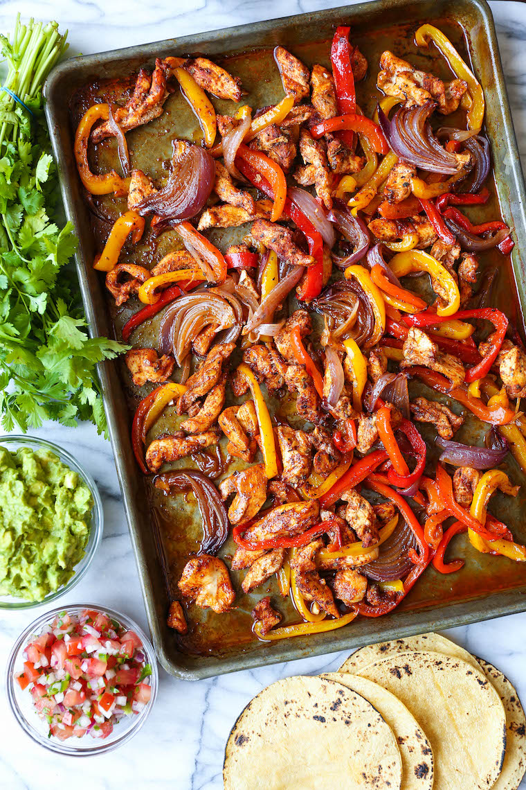

Chicken Fajitas

Best Weeknight Award Goes To:
Sheet pan chicken fajitas! Thank you for being there when I only have the energy to do slightly more than open a bag of orange chicken. Chop up some onions, peppers, and chicken. Throw on some spices and toss it in the oven while your chasing kids around the kitchen. 30 minutes later you have a delicious meal that tastes like it spent much more time and effort than it did.
Ingredients
- 2 teaspoons chili powder
- 2 teaspoons ground cumin
- 2 teaspoons dried oregano
- 1 teaspoon smoked paprika
- Kosher salt and freshly ground black pepper (to taste)
- 1 ½ pounds boneless, skinless chicken breasts, cut into thin strips
- 1 red bell pepper, cut into strips
- 1 yellow bell pepper, cut into strips
- 1 orange bell pepper, cut into strips
- 1 red onion, cut into wedges
- 3 cloves garlic, minced
- 3 tablespoons olive oil
- cup chopped fresh cilantro leaves
- 2 tablespoons freshly squeezed lime juice
- 6 8-inch flour or corn tortillas, warm
Instructions
- Preheat oven to 425 degrees F
- In a small bowl, mix the spices together
- Chop peppers, onions, and chicken into similar width strips. Toss in olive oil and spice mix until thoroughly incooperated.
- Place in oven and bake for 25 minutes or until chicken is cooked through and veggies are crisp-tender. Stir in cilantro and lime juice.
- Serve with warm tortillas, avocados, greek yogurt, hot sauce, and whatever else you fancy.